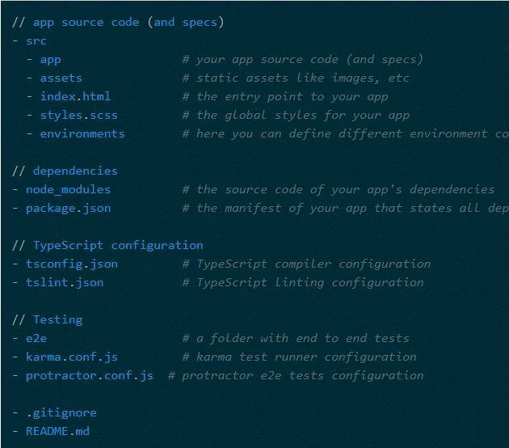
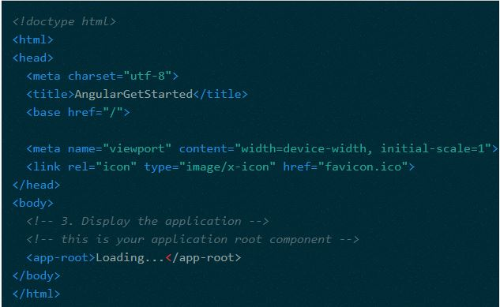
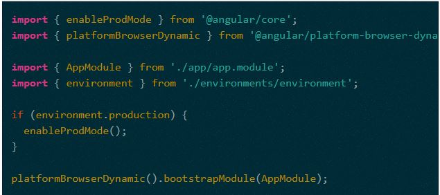
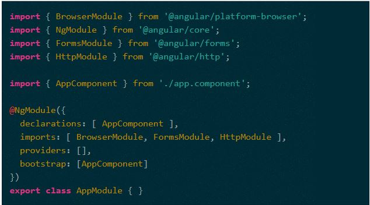
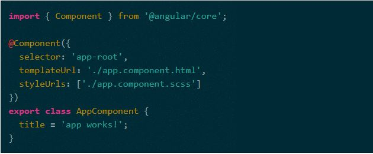
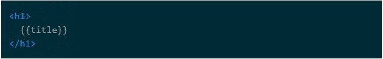

There are many front-end JavaScript frameworks to choose from today, each with its own set of trade-offs. Many people were happy with the functionality that Angular 1.x afforded them. Angular 2 improved on that functionality and made it faster, more scalable and more modern. Organizations that found value in Angular 1.x will find more value in Angular 2.
The first release of Angular provided programmers with the tools to develop and architect large scale JavaScript applications, but its age has revealed a number of flaws and sharp edges. Angular 2 was built on five years of community feedback.
The new Angular codebase is more modern, more capable and easier for new programmers to learn than Angular 1.x, while also being easier for project veterans to work with.
With Angular 1, programmers had to understand the differences between Controllers, Services, Factories, Providers and other concepts that could be confusing, especially for new programmers.
Angular 2 is a more streamlined framework that allows programmers to focus on simply building JavaScript classes. Views and controllers are replaced with components, which can be described as a refined version of directives. Even experienced Angular programmers are not always aware of all the capabilities of Angular 1.x directives.
Angular 2 was written in TypeScript, a superset of JavaScript that implements many new ES2016+ features.
By focusing on making the framework easier for computers to process, Angular 2 allows for a much richer development ecosystem. Programmers using sophisticated text editors (or IDEs) will notice dramatic improvements with auto-completion and type suggestions. These improvements help to reduce the cognitive burden of learning Angular 2. Fortunately for traditional ES5 JavaScript programmers this does not mean that development must be done in TypeScript or ES2015: programmers can still write vanilla JavaScript that runs without transpilation.
Despite being a complete rewrite, Angular 2 has retained many of its core concepts and conventions with Angular 1.x, e.g. a streamlined, "native JS" implementation of dependency injection. This means that programmers who are already proficient with Angular will have an easier time migrating to Angular 2 than another library like React or framework like Ember.
Angular 2 was designed for mobile from the ground up. Aside from limited processing power, mobile devices have other features and limitations that separate them from traditional computers. Touch interfaces, limited screen real estate and mobile hardware have all been considered in Angular 2.
Desktop computers will also see dramatic improvements in performance and responsiveness.
Angular 2, like React and other modern frameworks, can leverage performance gains by rendering HTML on the server or even in a web worker. Depending on application/site design this isomorphic rendering can make a user's experience feel even more instantaneous.
The quest for performance does not end with pre-rendering. Angular 2 makes itself portable to native mobile by integrating with NativeScript, an open source library that bridges JavaScript and mobile. Additionally, the Ionic team is working on an Angular 2 version of their product, providing another way to leverage native device features with Angular.
The first iteration of Angular provided web programmers with a highly flexible framework for developing applications. This was a dramatic shift for many web programmers, and while that framework was helpful, it became evident that it was often too flexible. Over time, best practices evolved, and a community-driven structure was endorsed.
The first iteration of Angular provided web programmers with a highly flexible framework for developing applications. This was a dramatic shift for many web programmers, and while that framework was helpful, it became evident that it was often too flexible. Over time, best practices evolved, and a community-driven structure was endorsed.
Angular 1.x tried to work around various browser limitations related to JavaScript. This was done by introducing a module system that made use of dependency injection. This system was novel, but unfortunately had issues with tooling, notably minification and static analysis.
Angular 2.x makes use of the ES2015 module system, and modern packaging tools like webpack or SystemJS. Modules are far less coupled to the "Angular way", and it's easier to write more generic JavaScript and plug it into Angular. The removal of minification workarounds and the addition of rigid prescriptions make maintaining existing applications simpler. The new module system also makes it easier to develop effective tooling that can reason better about larger projects.
Some of the other interesting features in Angular 2 are:
The best way to get started learning Angular 2 and TypeScript is to use the Angular CLI to bootstrap a new project.
The Angular CLI is great because it includes everything you need to start writing your Angular 2 application right away: A front-end build pipeline to transpile your TypeScript into JavaScript that can run in the browser, lots of generators to scaffold your app, a web development server that automatically reflects your changes in the browser as you make them and much more.
So start by installing the Angular CLI using npm (you’ll need to install node.js and npm in your development machine before you can continue). In your terminal of choice type:
npm install -g @angular/cli
Now you are ready to use the Angular CLI to create a new project. The command that you use to access the Angular CLI is ng. To create a new app type the following:
ng new angular-get-started --style scss
This will create a new Angular 2 project from scratch and set it up so that you can use SASS as CSS preprocessor. If you go inside the angular-get-started folder that should have just been created you’ll find a folder structure that will look more or less like this:
You can test that everything works as it should by running the development server. Type the following command:
ng serve --open
This should start the development server, open a browser and load your app. You can stop the server any time by typing CTRL-C a couple of times in the terminal
The index.html is the entry point to your application:
If you take a sneak peak at the index.html file in your project you’ll see the following
You may be wondering… Hmm… where are the styles and javascript files? All I can see is a custom element app-root. You’ll be happy to know that you don’t have any sight problems as the styles and JavaScript files are indeed not there… yet. The reason why that is the case is that the Angular CLI relies on Webpack to inject these files when they are needed.
In AngularJS we used the ng-app directive to point Angular 2 to the starting point of your application. In Angular 2 we use a bootstrapper. You can find the bootstrapping logic in the src/main.ts module:
In this file we import the platformBrowserDynamic object from the '@angular/platform-browser-dynamic' module and call its bootstrapModule function with the AppModule as argument.
There’s two interesting things to note here:
Calling the bootstrapModule function with the AppModule as argument tells Angular that this module is the main module for your application.
Angular 2 modules and the new NgModule decorator let us declare in one place all the dependencies and components of our application without the need to do it on a per-component basis (like we used to do in previous versions):
The NgModule decorator takes an object with the following information:
In this example we import an AppComponent component from the app.component.ts module and set it as the root of our application.
The AppComponent looks like this:
It has an AppComponent class that is decorated by some metadata in the form a TypeScript decorator @Component which binds the class to its template, its styles and the app-root selector
This metadata tells Angular 2 that whenever you see an <app-root> html element you should render the template in templateUrl, with the styles in stylesUrls and in the context of the AppComponent class.
If we take a sneak peek at the template app.component.html, you’ll see the following:
The title bit (which we call interpolation syntax) tells Angular 2 to display the content of the component title variable when rendering the component. Indeed, if you run ng serve you can see how the browser renders the text app works! inside an h1 element.
If you take a look back at the AppComponent definition and at your project structure you’ll realize that the Angular CLI follows a convention when creating components:
Now let’s do a quick test to see how we can bind the AppComponent class members to the template. Let’s change the title property value from app works! to Star Wars PPlz!!!!!. If you now save the file, your browser should automagically refresh itself and you should be able to see the Star Wars PPlz!!! as the title of your app (If you closed your browser just open it again and if you stopped the development server then remember to run ng serve --open to start it again and see your changes).